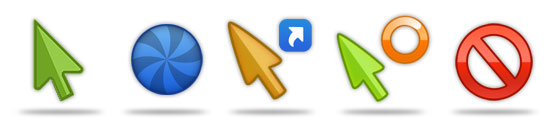
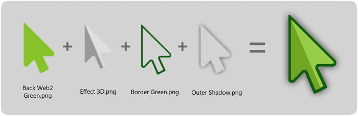

Basic Cursors
Axialis Object Pack #7 for Cursors
Copyright ©2008 Axialis Software - All Rights Reserved
Description
Axialis Object Pack #7 is composed of 423 objects (read more about objects) which permit creating static and animated cursors for Windows. Using drag & drop, you can create attractive cursors by associating basic objects and action overlays. The style is clean and professional which make them suitable for commercial applications. To read more about this pack, we recommend to visit this page: http://www.axialis.com/objects/ip_icon_07.shtml
Below is an example of a cursor set which can be done in a few minutes using this pack:

All the object remains properties of Axialis. However, you can use them without royalties to create icons for any purpose as long as you respect the User License Agreement: http://www.axialis.com/objects/agreement.html
How to create the cursors?
The question is: "How to create attractive custom cursors without drawing skills?" Image Objects are the answer.
The solution is to use a set of image objects already done by skilled computer graphic artists, and assemble them together to create a final artwork that will match your needs. Using a set of existing image objects the possibilities are almost infinite. You can create many different cursors or graphics simply by adjusting various parameters of each object like Hue (teint), Saturation, Brightess, Contrast, Size, Opacity and more.
For example, using 4 objects from this object pack, you can easily create an attractive Web 2.0 arrow pointer:

To learn more, read the help file (press F1), topic "Creating Cursors > from Image Objects". You can also read this online tutorial: http://www.axialis.com/tutorials/tutorial-create-cursors-using-image-objects.html